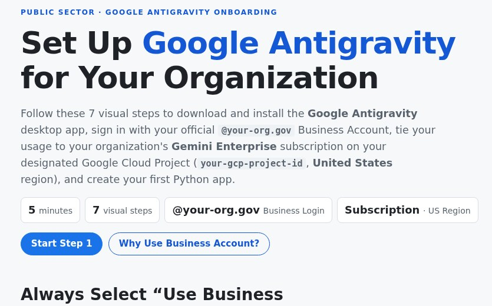
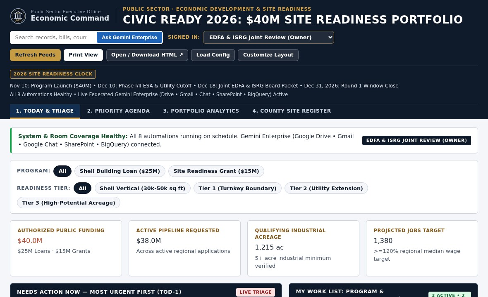

Generic AGY Plugin Launchpad & Skill Registry
1
Step 1 · Download & Install
1. Complete AGY Download & Install
Follow the 7 visual steps to download and install Google Antigravity (AGY) and sign in with your official organizational Business Account.
Set Up Google Antigravity for Your Organization (
@your-org.gov)

2
Step 2 · New Conversation + Turbo Mode
2. Install Plugin
- Click + New Conversation in Antigravity.
- Switch Request Review ▾ (bottom-right of prompt box) to ⚡ Turbo to eliminate repetitive approval prompts during install.
- Paste this prompt and click Send (
→):
agy plugin install https://github.com/peterfishergcp/gps-ai-hub/tree/main/projects/generic-agy-plugin
AGY Prompt Box — Paste Command & Select Turbo Mode
3
Step 3 · Verify & Explore
3. Test the Plugin
Try the guided test prompts or pick any of the 28 Public Sector skills below (Dashboards, Claude + Gemini models, FOIA, Government Services, Triage, and Connectors).
Live Rendered Output — Civic Ready 2026 Portfolio Dashboard

Public Sector Skills Registry
Explore 28 slash-command skills across 6 modular plugins & 7 categories—including Anthropic Claude + Google Gemini model routing (/model-guide), FOIA & procurement workflows, 7 Government Services (public_sector) skills, and live toggle switches inside Antigravity.